・スキル概要（できること）
|
C,C++ DirectX |
・経験：実務経験3年,個人学習2年 ・電子顕微鏡装置システム開発(C++) ・半導体装置システム開発(C) 3ヶ月の新人研修後現場に配属。 電子顕微鏡システムのコーディング、単体テストを担当。 配属から半年後に内部設計、コーディング、結合・単体テスト作成＆実施まで担当。 電子顕微鏡開発終了後、新規半導体装置のシステム開発、および既存半導体装置の改修を担当。 ・シューティングゲーム、3Dアクションゲーム、将棋等を自作(C++,DirectX) 業務で習得したC++を活かして、ゲームを作成。 |
|---|---|
| PHP |
・【資格】PHP8 技術者認定初級試験合格（2023年6月14日） ・経験：求職者支援訓練で半年 ・Laravelフレームワークでツイッター的なアプリ、本検索アプリ作成 ・XAMPP、AWSの使い方を習得中。 |
|
HTML,CSS JavaScript,Three.js |
・経験：求職者支援訓練&独学で1年 ・本ポートフォリオを求職者支援訓練中に作成 3Dマルバツゲーム（実際の作品は「こちら」）を求職者支援訓練中の課題で制作（期間1週間） |
|
AIイラスト (Stable Diffusion) |
・経験：個人学習2ヶ月 ・AIイラストに興味があったので書籍およびネットで学習 作成したイラストは「こちら」。 ・サイトで使用する素材、SNS等で使用するアイコンは依頼して頂ければ作成できます。 「例：サイズ600*240、杜の都仙台をイメージした風景画、 サイズ100*100、モルモットをデフォルメしたアイコンがほしい、 サイズ500*500、ゲームで使用する敵キャラ（スライム、ゴーレム等）作って、等など」 |
・3Dマルバツゲーム概要(JavaScript,three.js)
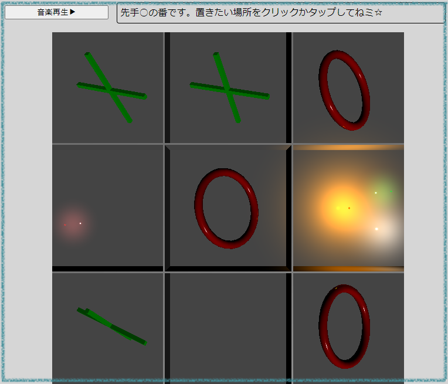
3Dマルバツゲームの画面
| 使用言語 | HTML・CSS・JavaScript |
|---|---|
| 使用ライブラリ | Three.js（3D描画に特化した商用利用可能なJavaScriptライブラリ） |
| 制作期間 | 1週間+休憩時間や昼休み時間 |
| コメント |
・求職者支援訓練のJavaScriptプログラミング演習終了時の課題で制作。 ・「Three.js」で3D化できることがわかったので採用。 ・実際の作品は「こちら」 |
AIイラスト概要(Stable Diffusion)
| 使用ソフト | Stable Diffusion |
|---|---|
| 使用モデル、拡張機能 | OrangeMix3、derita、Pixelization等 |
| コメント |
・AIイラスト系、特にStable Diffusionがものすごく進化しているとの事で調査。 調査したところ、絵心のない僕でも様々なイラストを生成できることがわかった。 ・トップページにもAI生成作品を何点かイラストをアップしておきます。 ・AIイラスト作品集は「こちら」 |
プロンプトを指定して画像作成

ちびキャラ1
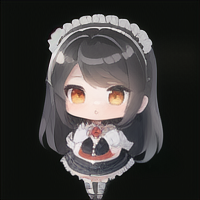
ちびキャラ2
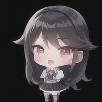
ちびキャラ3
ちびキャラ4
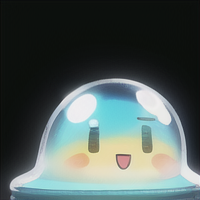
ちびキャラ5
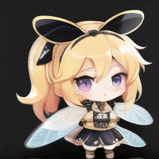
ちびキャラ6
↓↓↓
拡張機能「Pixelization」を使用してドット化
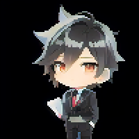
ちびキャラドット化1
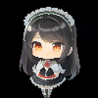
ちびキャラドット化2
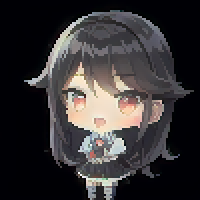
ちびキャラドット化3
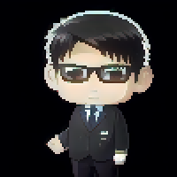
ちびキャラドット化4
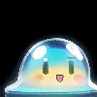
ちびキャラドット化5
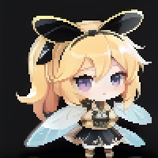
ちびキャラドット化6
↓↓↓
表情差分
無表情
笑顔
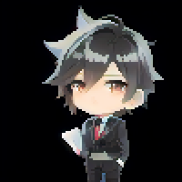
悲しい
怒る
照れる
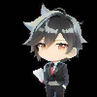
眠い
シューティングゲーム概要(C++,DirectX)
| 使用言語 | C++ |
|---|---|
| 使用ライブラリ | DirectX |
| 制作期間 | 約半年 |
| コメント |
・ゲーム会社に提出するために作った作品。 ・windows上で3D表示ができるDirectXライブラリを採用。 ・詳しくは「こちら（未実装）」 |
3Dアクションゲーム概要(C++,DirectX)
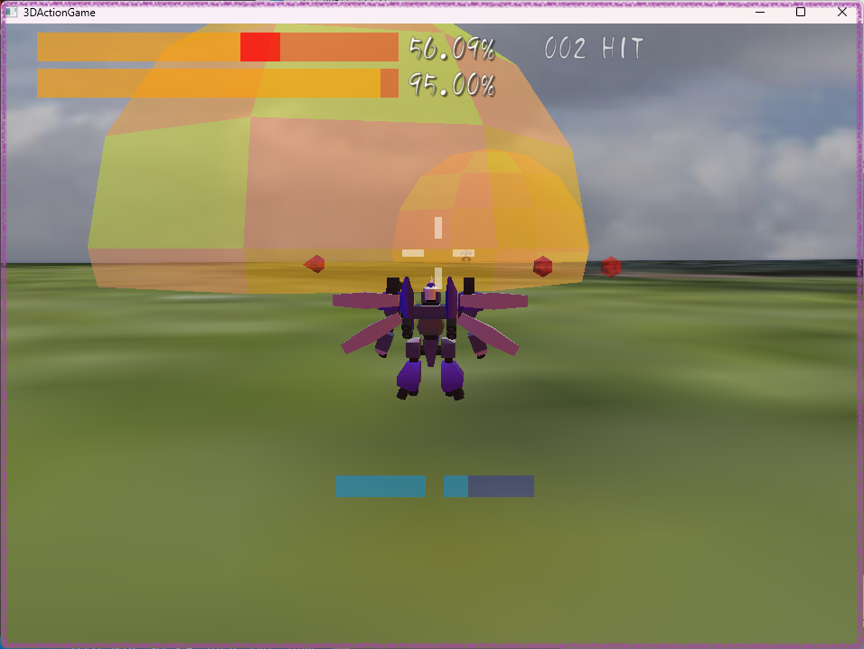
3Dアクションゲームの画面
| 使用言語 | C++ |
|---|---|
| 使用ライブラリ | DirectX |
| 制作期間 | 約3ヶ月 |
| コメント |
・ゲーム関連会社に就職後、研修中に制作。 ・上記の3Dシューティングゲームのライブラリを改良し、カメラを自由に動かせるようにした。 ・物理演算を搭載（ダッシュ時の加速度、重力等）。 ・詳しくは「こちら（未実装）」 |